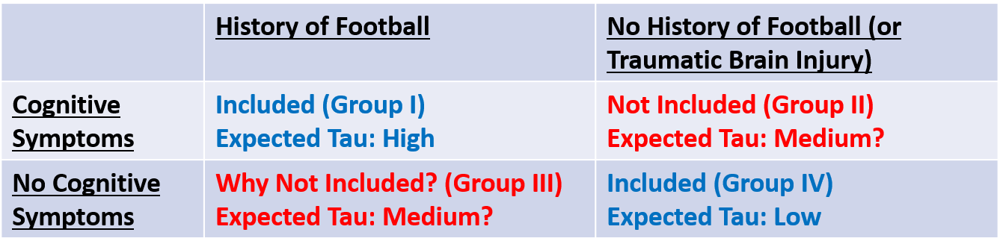

Diagnosing CTE in the Living: Proper Control Groups and the Importance of Your Research Question
A very interesting if preliminary paper looking at the possibility of using positron emission tomography (PET) scans (similar to a CT or MRI) to measure accumulations of a protein called tau in people’s brains was published this week in the New England Journal of Medicine.
Tau is important because its accumulation in the brain is the main way that chronic traumatic encephalopathy (CTE), a degenerative brain disease resulting from repetitive head trauma such as is experienced in contact sports like football and ice hockey, is diagnosed. CTE currently can only be diagnosed at autopsy, severely limiting research on the disease. A test for tau in the brains of the living would be a game-changer for CTE research.
A number of people, however, have been criticizing the paper for not including the right kinds of people. Specifically, while the study looked at ex-football players with cognitive and neuropsychiatric symptoms and healthy non-players, some seem confused or even suspicious about why it didn’t also include healthy ex-players? The short answer is because it shouldn’t have. Here’s why:
The Study Included the Right People for Its Research Question/Objective
The study’s goal was to see if a new test for tau works. That’s it. It did not, among other things, set out to:
Prove a link between playing football and tau accumulation
Prove a link between playing football and cognitive decline
Prove a link between tau accumulation and cognitive decline
Oversimplifying, the study’s goal was to see if a new type of PET scan (a new radiotracer, actually) could be used to accurately measure the amount of tau accumulation in living brains. The thing is, before doing this study we have no idea if the scan works!
Thus we need to do the scan in brains where we expect high levels of tau and where we don’t expect high levels of tau and see if the scans’ results line up with what we expect. If they do, we can have some confidence the test might work. It’s not a guarantee – we won’t know unless we run the PET scan and then soon after do autopsies on the same brains – but it’s encouraging. If the results don’t line up with what we expect, it’s back to the drawing board.
So did the researchers do this correctly? Yes. They chose two groups: 1. Former football players experiencing cognitive or neuropsychiatric symptoms; 2. Similarly-aged men without any cognitive or neuropsychiatric symptoms or history of traumatic brain injuries.
Based on prior research we would expect the first group to have some of the highest tau levels, and the second group some of the lowest. I would argue maybe they shouldn’t have even age-matched, but honestly it’s probably fine.
They ran the tests in these two groups and found, indeed, that the new PET scan did show higher levels of tau in those expected to have higher levels of tau. Far from conclusive, but definitely encouraging.
Why Didn’t the Study Include Football Players WITHOUT Cognitive Impairment, or Cognitively-Impaired Non-Players?
This has been a surprisingly common criticism of this study. And the answer is really quite simple: because this wouldn’t have helped the study achieve its goal (or, in more technical terms, address its research question). In fact, it would’ve hurt the study. Consider the following grid:

The study wanted to compare people with expected high and low tau values. They chose the right groups! Including the other groups would have muddied the waters about whether the test worked or not.
Including the other groups would have made more sense for other research questions that this study didn’t address. For example:
Group I vs. Group II: Is the same amount of tau present in the brains of anybody exhibiting cognitive symptoms, or just those with a history of repetitive head trauma?
Group I vs. Group III: What are the differences between ex-football players who do and do not show later-life cognitive symptoms? For example, is there a difference in their tau levels?
Group II vs. Group IV: Among people without a history of repetitive head trauma, are tau amounts similar in those who do and do not exhibit later-life cognitive symptoms?
Groups I+III vs. Groups II+IV: Are later-life cognitive symptoms more common among those with a history of playing football than those with no history of repetitive head trauma?
Critically, again, this study was not designed to answer any of these questions, so these groups (II and III) would not have been appropriate.
Conclusion
A study needs to choose the right control group to accomplish its goal. This paper did so.
People clamoring for other control groups seem to be expecting this study to answer every question about the connections between football, tau, and CTE. Unfortunately that’s just not how science works. Ever.
If you want to say this study didn’t prove any links between football, tau, CTE, and cognitive symptoms, that’s fine! But that wasn’t its goal. And there’s plenty of other literature that does make the case for these various links (though the science is far from fully explored).
This study is only a small piece of the puzzle, but it used the right people to accomplish what it set out to do. Before criticizing studies we must first think carefully about what its goal was (this is typically found in the last sentence of its introduction, and hopefully in the abstract, too!). Then ask ourselves, “Did it answer the question it set out to?”